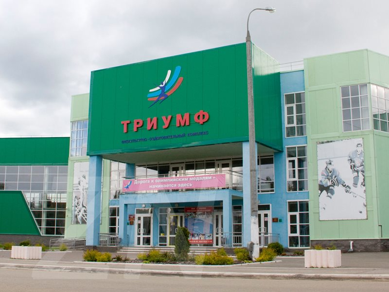
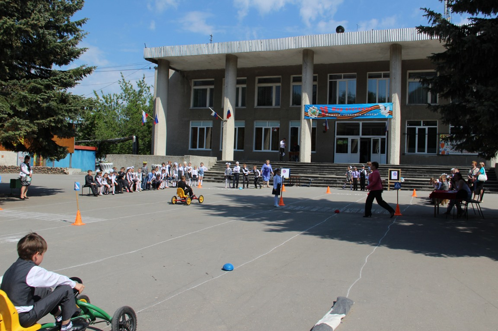
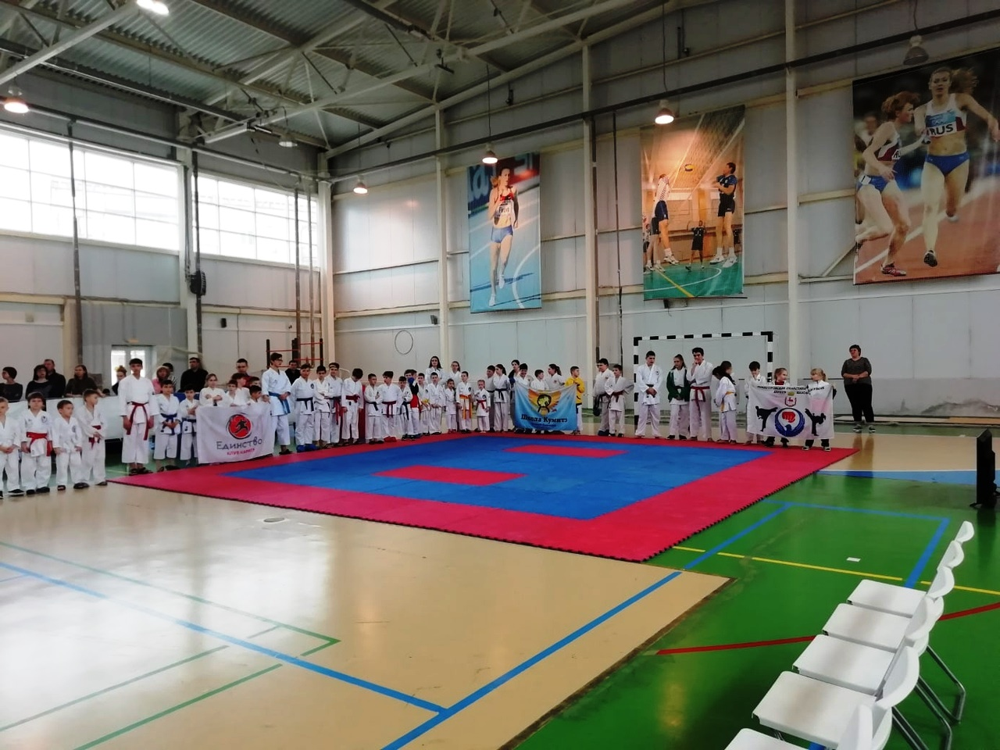
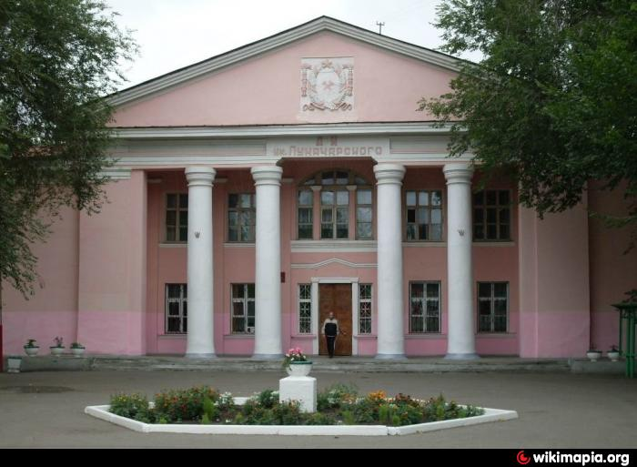

Фок-Триумф
ФОК в Володарске – типовой проект физкультурно-оздоровительных комплексов, строящихся в Нижегородской области. В состав спортивного комплекса вошли ...
МАУК Володарское СКО
МАУК Володарское СКО — 9 учреждений культуры Володарского района, где действуют клубные формирования, которыми руководят бесконечно влюбленные в свою работу яркие и ...
МАУ СШ Авангард
Муниципальное автономное учреждение спортивная школа «Авангард» Володарского муниципального района Нижегородской области. Основные цели и задачи - создание оптимальных ...
Дворец Культуры им. Луначарского
Дворец Культуры им. Луначарского — крупнейший в Володарском районе ДК ,делающий всё, чтобы жизнь решетихинцев и жителей района была...
Свидетельство о постановке на учёт российской организации в налоговом органе
Отчёт отдела культуры, спорта и молодёжной политики за 2016 год
Свидетельство о государственной регистрации юридического лица
Отчет о ходе реализации Программы «Развитие культуры и туризма в Володарском муниципальном районе за 2019 год»
Приказ "Об утверждении значений нормативных затрат на выполнение работ муниципальными учреждениями, подведомственных отделу культуры спорта и молодежной политики Володарского муниципального района"
Постановление об утверждении плана формирования независимой оценки качества деятельности учреждений культуры Володарского муниципального района
Положение об отделе культуры, спорта и молодёжной политики
Отчёт отдела культуры, спорта и молодёжной политики за 2015 год
Отчёт отдела культуры, спорта и молодёжной политики за 2017 год
Отчёт отдела культуры, спорта и молодёжной политики за 2018 года
Отчёт о ходе выполнения муниципальной программы «Развитие физической культуры, спорта и молодежной политики в Володарском муниципальном районе» по итогам 2019 года.
План мероприятий формирования и внедрения независимой оценки качества деятельности учреждений культуры Володарского муниципального района